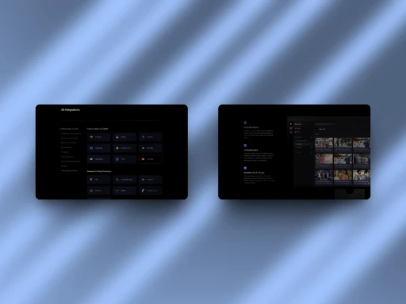
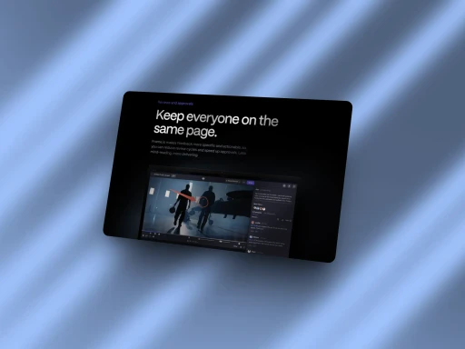
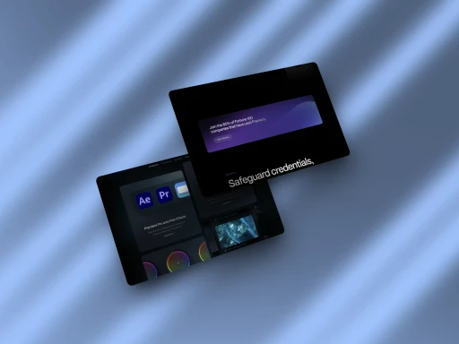
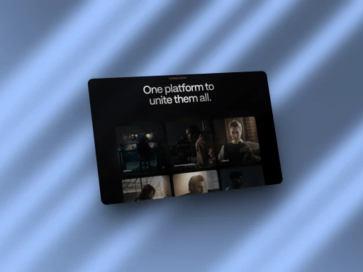
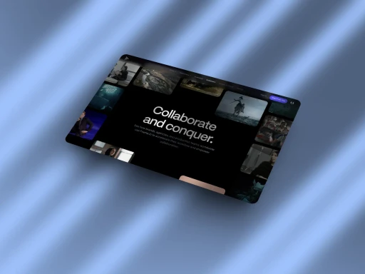
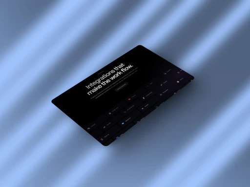

Stream AI
Before Stream AI, post-production workflows were fragmented, with no centralized platform for real-time collaboration. Editors, directors, and clients struggled to sync feedback, leading to costly revisions and project bottlenecks, especially in high-stakes industries like film and advertising.

Explore the full story –
Challenge
Video production teams faced inefficiencies in feedback loops, relying on emails, scattered notes, and multiple file versions. This disjointed process caused delays, miscommunication, and version control issues, particularly for remote collaborators working on tight deadlines.
Objective
Stream AI set out to revolutionize video collaboration by creating a unified workspace where teams could review, annotate, and approve footage in real time. The platform aimed to streamline communication, reduce errors, and accelerate project timelines with seamless integrations into popular editing software.
Results
Adopted by major studios in the whole industry, Stream AI became an industry standard, cutting review cycles by up to 50%. Its intuitive interface and robust features transformed remote collaboration, making it indispensable for creatives worldwide.





